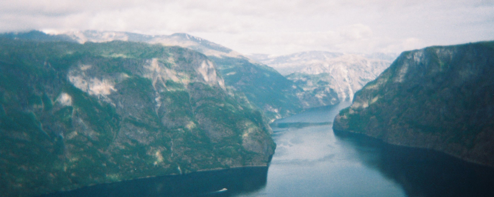

This forms a narrow, steep sided inlet (in Norway, sometimes deeper than 1300 metres) connected to the sea. The terminal moraine pushed down the valley by the glacier is left underwater at the fjord’s entrance, causing the water at the neck of the fjord to be shallower than the main body of the fjord behind it.
Fjord, from the norse “fjörðr”, means “der man ferder over” (English “where you travel across”) or “å sette over på den andre siden” (english “put across to the other side”). It has the same origin as the norwegian word “ferd” (english “fare” or “travel”). The verb “fare” (english “travel”) and the substantive “ferje” (english “ferry”) has the same origin.
